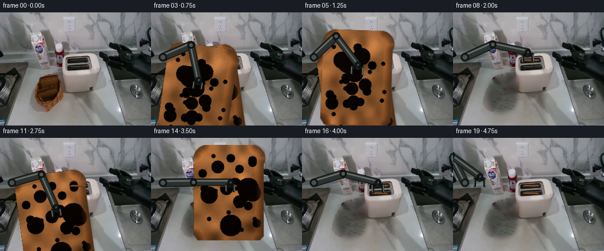
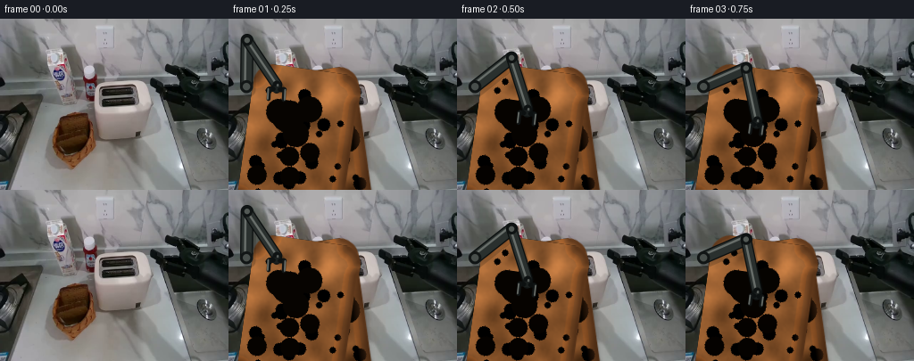
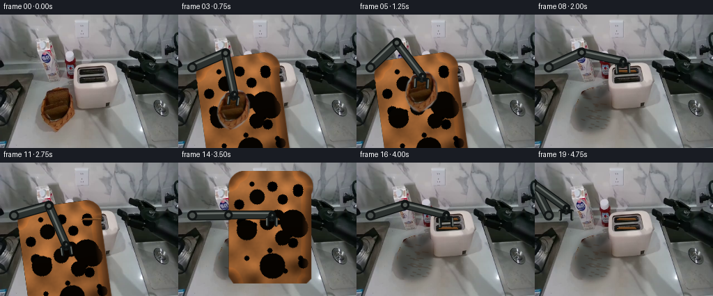
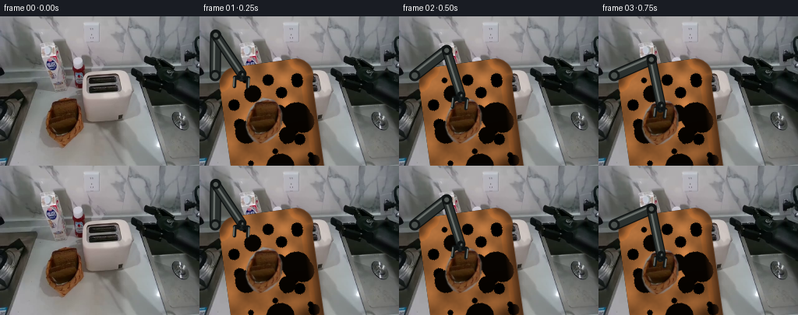
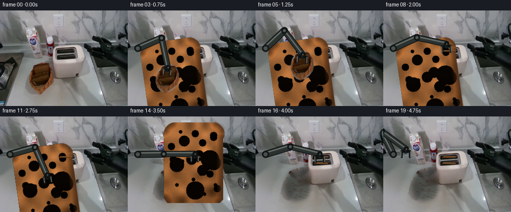
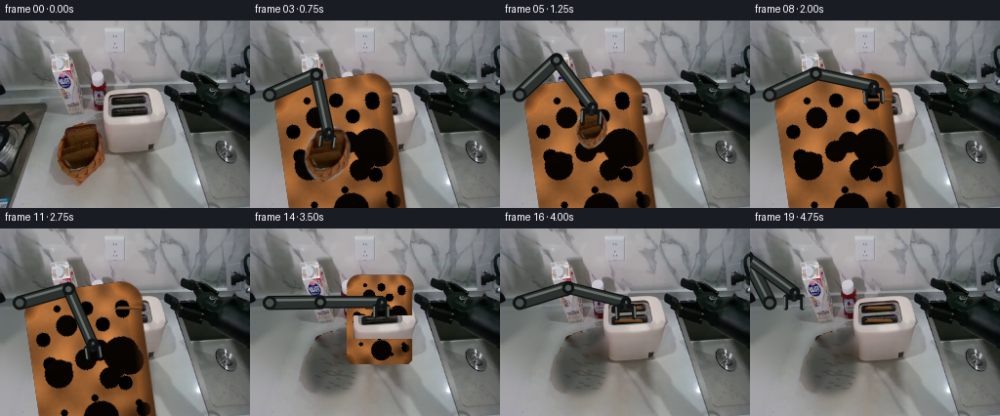
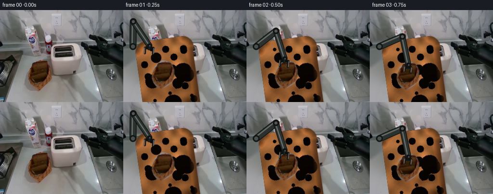
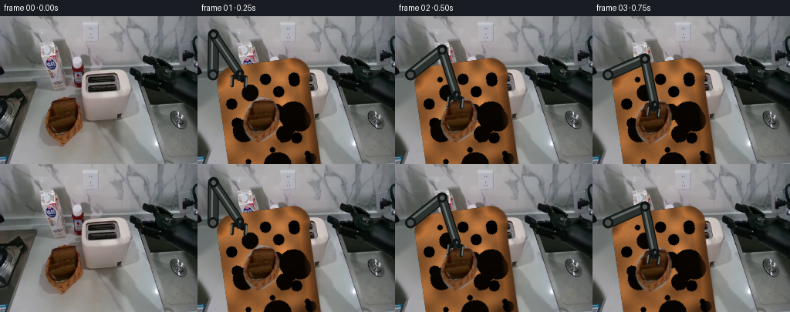
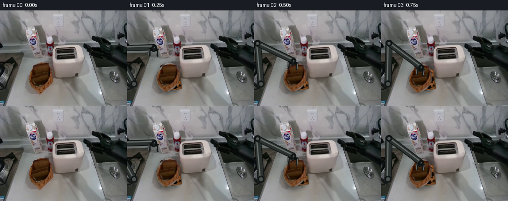
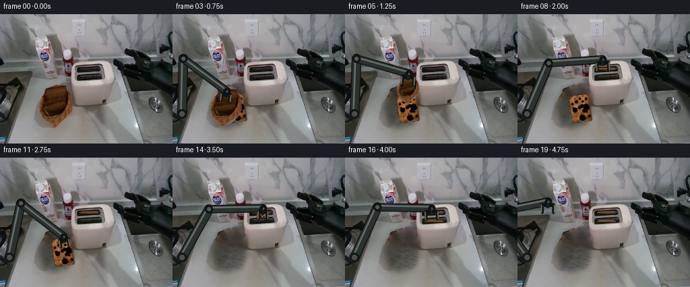

CODING AGENTS AS PIXEL WORLD MODELS
traex/DeepSeek-V4.1-Flash · common50_0002
点击播放 · 原生 RGB 像素
逐轮保存的候选
回放视频、检查图与代码变化。
每份候选均可单独播放。实际图片检查记录在下方工具轨迹中。
候选 01播放与检查图
点击播放 · 原生 RGB 像素


展开代码变化
--- 上一保存版本
+++ 本次保存版本
@@ -0,0 +1,378 @@
+from pathlib import Path
+
+import cv2
+import numpy as np
+from PIL import Image
+
+import artifact_io
+
+
+ROOT = Path(__file__).resolve().parent
+W, H, N, FPS = 256, 192, 20, 4
+
+
+def smoothstep(t):
+ t = float(np.clip(t, 0.0, 1.0))
+ return t * t * (3.0 - 2.0 * t)
+
+
+def lerp(a, b, t):
+ return a + (b - a) * t
+
+
+def interp_keyframes(frame, keys):
+ if frame <= keys[0][0]:
+ return np.asarray(keys[0][1], dtype=np.float64)
+ if frame >= keys[-1][0]:
+ return np.asarray(keys[-1][1], dtype=np.float64)
+ for (f0, p0), (f1, p1) in zip(keys[:-1], keys[1:]):
+ if f0 <= frame <= f1:
+ t = smoothstep((frame - f0) / max(1, f1 - f0))
+ return lerp(np.asarray(p0, np.float64), np.asarray(p1, np.float64), t)
+ return np.asarray(keys[-1][1], dtype=np.float64)
+
+
+def make_basket_clean(image):
+ """Remove the bread-colored contents while retaining the woven basket."""
+ rgb = image.astype(np.int16)
+ r, g, b = rgb[:, :, 0], rgb[:, :, 1], rgb[:, :, 2]
+ yy, xx = np.indices((H, W))
+ bread_color = (r > g + 7) & (g > b + 3) & (r > 34) & (r < 150)
+ bread_roi = bread_color & (xx >= 57) & (xx <= 110) & (yy >= 103) & (yy <= 170)
+ mask = (bread_roi.astype(np.uint8) * 255)
+ mask = cv2.morphologyEx(mask, cv2.MORPH_CLOSE, np.ones((5, 5), np.uint8))
+ count, labels, stats, _ = cv2.connectedComponentsWithStats(mask, 8)
+ if count > 1:
+ keep = 1 + int(np.argmax(stats[1:, cv2.CC_STAT_AREA]))
+ mask = ((labels == keep).astype(np.uint8) * 255)
+ contours, _ = cv2.findContours(mask, cv2.RETR_EXTERNAL, cv2.CHAIN_APPROX_SIMPLE)
+ if contours:
+ contour = max(contours, key=cv2.contourArea)
+ hull = cv2.convexHull(contour)
+ mask[:] = 0
+ cv2.drawContours(mask, [hull], -1, 255, -1)
+ mask = cv2.erode(mask, np.ones((3, 3), np.uint8), iterations=1)
+ clean = cv2.inpaint(image, mask, 5, cv2.INPAINT_TELEA)
+
+ # Empty basket interiors are dark. This restrained fill preserves the
+ # basket edge while making the removal read as a real cavity.
+ soft = cv2.GaussianBlur(mask.astype(np.float32) / 255.0, (0, 0), 4.0)
+ fill = clean.astype(np.float32) * 0.63
+ fill[:, :, 0] *= 0.92
+ clean = (clean * (1.0 - soft[..., None]) + fill * soft[..., None]).astype(np.uint8)
+
+ # A few short weave strokes keep the filled cavity from looking like a blur.
+ overlay = clean.copy()
+ rng = np.random.default_rng(31)
+ for _ in range(34):
+ x = int(rng.integers(66, 104))
+ y = int(rng.integers(118, 165))
+ if mask[y, x] == 0:
+ continue
+ length = int(rng.integers(4, 10))
+ shade = int(rng.integers(43, 63))
+ cv2.line(overlay, (x, y), (min(108, x + length), y + 1), (shade, shade // 2, 9), 1, cv2.LINE_AA)
+ blend = cv2.GaussianBlur(mask.astype(np.float32) / 255.0, (0, 0), 1.0)[..., None] * 0.28
+ return (clean * (1.0 - blend) + overlay * blend).astype(np.uint8)
+
+
+def toast_asset(seed=5, width=34, height=45):
+ """Build a rigid, high-resolution brown-bread slab with a dark crust."""
+ ss = 4
+ w, h = width * ss, height * ss
+ rng = np.random.default_rng(seed)
+ yy, xx = np.mgrid[0:h, 0:w].astype(np.float32)
+
+ low = rng.normal(0.0, 1.0, (10, 8)).astype(np.float32)
+ low = cv2.resize(low, (w, h), interpolation=cv2.INTER_CUBIC)
+ fine = rng.normal(0.0, 1.0, (h, w)).astype(np.float32)
+ fine = cv2.GaussianBlur(fine, (0, 0), 1.4)
+
+ u = xx / max(1, w - 1)
+ v = yy / max(1, h - 1)
+ warm = 13.0 * (1.0 - v) + 5.0 * np.sin(u * np.pi)
+ texture = 18.0 * low + 7.5 * fine + warm
+ base = np.empty((h, w, 3), np.float32)
+ base[:, :, 0] = 137.0 + texture
+ base[:, :, 1] = 88.0 + texture * 0.66 - 3.0 * v
+ base[:, :, 2] = 47.0 + texture * 0.38 - 5.0 * v
+
+ # Toast marks and small air pockets.
+ for _ in range(22):
+ cx, cy = rng.integers(3, width - 3) * ss, rng.integers(4, height - 4) * ss
+ radius = int(rng.integers(1, 3)) * ss
+ tint = np.array([-10, -7, -4], np.float32)
+ cv2.circle(base, (int(cx), int(cy)), radius, tint.tolist(), -1, cv2.LINE_AA)
+ for _ in range(8):
+ cx, cy = rng.integers(5, width - 5) * ss, rng.integers(8, height - 5) * ss
+ radius = int(rng.integers(3, 6)) * ss
+ cv2.circle(base, (int(cx), int(cy)), radius, [7, 4, 1], -1, cv2.LINE_AA)
+ base = np.clip(base, 0, 255)
+
+ mask = np.zeros((h, w), np.uint8)
+ radius = 6 * ss
+ pts = np.array(
+ [
+ [radius, 0],
+ [w - radius, 0],
+ [w - 2 * ss, 3 * ss],
+ [w - ss, 9 * ss],
+ [w - ss, h - 2 * ss],
+ [w - 3 * ss, h],
+ [2 * ss, h],
+ [0, h - 3 * ss],
+ [0, 9 * ss],
+ [2 * ss, 3 * ss],
+ ],
+ np.int32,
+ )
+ cv2.fillPoly(mask, [pts], 255, cv2.LINE_AA)
+ cv2.circle(mask, (radius, radius), radius, 255, -1, cv2.LINE_AA)
+ cv2.circle(mask, (w - radius - 1, radius), radius, 255, -1, cv2.LINE_AA)
+
+ # Dark crust, with a narrow toasted transition inside it.
+ dist = cv2.distanceTransform(mask, cv2.DIST_L2, 5) / ss
+ crust_w = np.clip(1.0 - (dist - 1.0) / 3.0, 0.0, 1.0)[..., None]
+ edge_color = np.array([72.0, 42.0, 20.0], np.float32)
+ base = base * (1.0 - 0.78 * crust_w) + edge_color * (0.78 * crust_w)
+ rim = (dist > 2.5) & (dist < 4.3)
+ base[rim] *= np.array([1.08, 1.03, 0.94], np.float32)
+
+ # A soft top light and bottom shadow preserve the slab's thickness.
+ shade = np.clip((v - 0.50) * 0.18, -0.06, 0.10)
+ base *= (1.0 - shade[..., None])
+ base[..., 0] *= 1.015
+ asset = np.clip(base, 0, 255).astype(np.uint8)
+ alpha = mask
+ return asset, alpha
+
+
+def composite_rgba(canvas, rgba, center, angle=0.0, scale=1.0, squash=1.0):
+ h, w = rgba.shape[:2]
+ m = cv2.getRotationMatrix2D((w / 2.0, h / 2.0), angle, scale)
+ m[1, :] *= squash
+ m[0, 2] += center[0] - w / 2.0
+ m[1, 2] += center[1] - h / 2.0
+ rgb = cv2.warpAffine(
+ rgba[:, :, :3],
+ m,
+ (W, H),
+ flags=cv2.INTER_AREA,
+ borderMode=cv2.BORDER_CONSTANT,
+ borderValue=(0, 0, 0),
+ )
+ a = cv2.warpAffine(
+ rgba[:, :, 3],
+ m,
+ (W, H),
+ flags=cv2.INTER_AREA,
+ borderMode=cv2.BORDER_CONSTANT,
+ borderValue=0,
+ ).astype(np.float32) / 255.0
+ out = canvas.astype(np.float32) * (1.0 - a[..., None]) + rgb.astype(np.float32) * a[..., None]
+ return np.clip(out, 0, 255).astype(np.uint8)
+
+
+def ik_elbow(base, target, l1, l2):
+ base = np.asarray(base, np.float64)
+ target = np.asarray(target, np.float64)
+ delta = target - base
+ d = max(1e-3, float(np.linalg.norm(delta)))
+ d = min(d, l1 + l2 - 1e-3)
+ d = max(d, abs(l1 - l2) + 1e-3)
+ unit = delta / max(1e-6, np.linalg.norm(delta))
+ a = (l1 * l1 - l2 * l2 + d * d) / (2.0 * d)
+ h = np.sqrt(max(0.0, l1 * l1 - a * a))
+ mid = base + unit * a
+ normal = np.array([-unit[1], unit[0]])
+ e1 = mid + normal * h
+ e2 = mid - normal * h
+ # Keep the elbow high and toward the workspace center for a clean silhouette.
+ return e1 if e1[1] < e2[1] else e2
+
+
+def draw_arm(canvas, wrist, grip_angle, closed):
+ ss = 3
+ big = cv2.resize(canvas, (W * ss, H * ss), interpolation=cv2.INTER_NEAREST)
+ base = np.array([20.0, 76.0])
+ elbow = ik_elbow(base, wrist, 52.0, 60.0)
+
+ def p(point):
+ return tuple(np.round(np.asarray(point) * ss).astype(int))
+
+ # Subtle cast shadow on the work surface.
+ shadow = big.copy()
+ cv2.line(shadow, p(base + [3, 4]), p(elbow + [3, 4]), (9, 12, 10), 14 * ss, cv2.LINE_AA)
+ cv2.line(shadow, p(elbow + [3, 4]), p(wrist + [3, 4]), (9, 12, 10), 11 * ss, cv2.LINE_AA)
+ big = cv2.addWeighted(shadow, 0.18, big, 0.82, 0)
+
+ for a, b, width, shade in [
+ (base, elbow, 11, 0),
+ (elbow, wrist, 9, 1),
+ ]:
+ cv2.line(big, p(a), p(b), (12, 16, 16), (width + 3) * ss, cv2.LINE_AA)
+ cv2.line(big, p(a), p(b), (43, 49, 47), width * ss, cv2.LINE_AA)
+ offset = np.array([-1.8, -2.5])
+ cv2.line(big, p(a + offset), p(b + offset), (104, 110, 106), max(1, 2 * ss), cv2.LINE_AA)
+ cv2.circle(big, p(a), (width // 2 + 1) * ss, (27, 32, 31), -1, cv2.LINE_AA)
+ cv2.circle(big, p(a), max(1, (width // 2 - 2) * ss), (68, 74, 71), -1, cv2.LINE_AA)
+
+ cv2.circle(big, p(base), 7 * ss, (18, 22, 22), -1, cv2.LINE_AA)
+ cv2.circle(big, p(base), 4 * ss, (73, 79, 76), -1, cv2.LINE_AA)
+ cv2.circle(big, p(elbow), 6 * ss, (16, 20, 20), -1, cv2.LINE_AA)
+ cv2.circle(big, p(elbow), 3 * ss, (83, 89, 85), -1, cv2.LINE_AA)
+
+ # Compact parallel-jaw gripper, rigidly attached to the wrist.
+ theta = np.deg2rad(grip_angle)
+ down = np.array([np.sin(theta), np.cos(theta)])
+ right = np.array([np.cos(theta), -np.sin(theta)])
+ wrist = np.asarray(wrist, np.float64)
+ palm = wrist + down * 5.0
+ cv2.line(big, p(wrist), p(palm), (15, 19, 19), 9 * ss, cv2.LINE_AA)
+ cv2.line(big, p(wrist + right * 1), p(palm + right * 1), (87, 92, 88), 2 * ss, cv2.LINE_AA)
+ cv2.line(big, p(palm - right * 3), p(palm + right * 3), (28, 33, 32), 6 * ss, cv2.LINE_AA)
+
+ open_gap = 8.5 if not closed else 6.2
+ for sign in (-1, 1):
+ top = palm + right * sign * open_gap * 0.45
+ knuckle = palm + right * sign * open_gap
+ tip = knuckle + down * (11.5 if not closed else 10.0)
+ cv2.line(big, p(top), p(knuckle), (13, 17, 17), 5 * ss, cv2.LINE_AA)
+ cv2.line(big, p(knuckle), p(tip), (17, 21, 21), 4 * ss, cv2.LINE_AA)
+ cv2.line(big, p(knuckle + right * sign), p(tip + right * sign), (104, 109, 104), 1 * ss, cv2.LINE_AA)
+
+ small = cv2.resize(big, (W, H), interpolation=cv2.INTER_AREA)
+ return small
+
+
+def slot_strip(canvas, slot_y, width=29):
+ """A small exposed crust line left after a slice enters the toaster."""
+ x0, x1 = 132 - width // 2, 132 + width // 2
+ rng = np.random.default_rng(90 + slot_y)
+ for x in range(x0, x1):
+ n = float(rng.integers(-4, 5))
+ c = (int(np.clip(105 + n, 0, 255)), int(np.clip(64 + n * 0.7, 0, 255)), int(np.clip(31 + n * 0.35, 0, 255)))
+ canvas[slot_y, x] = c
+ canvas[slot_y + 1, x] = (max(0, c[0] - 19), max(0, c[1] - 13), max(0, c[2] - 7))
+ cv2.line(canvas, (x0 + 2, slot_y - 1), (x1 - 2, slot_y - 1), (137, 91, 49), 1, cv2.LINE_AA)
+ return canvas
+
+
+def main():
+ original = np.asarray(Image.open(ROOT / "first_frame.png").convert("RGB"), dtype=np.uint8)
+ assert original.shape == (H, W, 3)
+ clean = make_basket_clean(original)
+
+ toast_a, alpha_a = toast_asset(seed=17, width=33, height=44)
+ toast_b, alpha_b = toast_asset(seed=23, width=33, height=44)
+ rgba_a = np.dstack([toast_a, alpha_a])
+ rgba_b = np.dstack([toast_b, alpha_b])
+
+ basket_a = np.array([79.5, 137.0])
+ basket_b = np.array([94.0, 140.0])
+ slot_a = np.array([132.0, 81.0])
+ slot_b = np.array([133.0, 94.0])
+
+ wrist_keys = [
+ (0, [43, 64]),
+ (1, [54, 74]),
+ (2, [79, 101]),
+ (3, [80, 114]),
+ (4, [80, 105]),
+ (5, [94, 88]),
+ (6, [131, 61]),
+ (7, [132, 62]),
+ (8, [126, 67]),
+ (9, [108, 83]),
+ (10, [94, 101]),
+ (11, [94, 117]),
+ (12, [94, 107]),
+ (13, [108, 90]),
+ (14, [134, 75]),
+ (15, [134, 76]),
+ (16, [128, 75]),
+ (17, [102, 84]),
+ (18, [58, 72]),
+ (19, [45, 65]),
+ ]
+
+ frames = np.empty((N, H, W, 3), np.uint8)
+ frames[0] = original
+ for f in range(1, N):
+ frame = clean.copy()
+
+ # Both slices remain in the basket until their grasp frame.
+ if f < 3:
+ frame = composite_rgba(frame, rgba_b, basket_b, 8.0, 0.92)
+ frame = composite_rgba(frame, rgba_a, basket_a, -8.0, 0.92)
+ elif f < 6:
+ frame = composite_rgba(frame, rgba_b, basket_b, 8.0, 0.92)
+ elif f < 11:
+ pass
+ elif f < 13:
+ frame = composite_rgba(frame, rgba_b, basket_b, 8.0, 0.92)
+
+ wrist = interp_keyframes(f, wrist_keys)
+ grip_angle = interp_keyframes(
+ f,
+ [
+ (0, [0]),
+ (2, [-6]),
+ (4, [-8]),
+ (6, [-1]),
+ (9, [5]),
+ (11, [8]),
+ (14, [1]),
+ (17, [3]),
+ (19, [0]),
+ ],
+ )[0]
+ closed = f in (3, 4, 6, 7, 11, 12, 14, 15)
+
+ # First slice: grasp, rigid lift, transport, and insertion.
+ if 3 <= f <= 7:
+ if f <= 5:
+ c = wrist + np.array([0.0, 23.0])
+ ang = lerp(-8.0, -2.0, smoothstep((f - 3) / 2.0))
+ squash = 1.0
+ else:
+ c = slot_a + np.array([0.0, -1.0 + (f - 6) * 0.6])
+ ang = 0.0
+ squash = 1.0 if f == 6 else 0.18
+ frame = composite_rgba(frame, rgba_a, c, ang, 0.92, squash)
+
+ # Second slice follows the same rigid motion one slot lower.
+ if 11 <= f <= 15:
+ if f <= 13:
+ c = wrist + np.array([0.0, 23.0])
+ ang = lerp(8.0, 2.0, smoothstep((f - 11) / 2.0))
+ squash = 1.0
+ else:
+ c = slot_b + np.array([0.0, -1.0 + (f - 14) * 0.6])
+ ang = 0.0
+ squash = 1.0 if f == 14 else 0.18
+ frame = composite_rgba(frame, rgba_b, c, ang, 0.92, squash)
+
+ # Keep the completed toast visible in the slot.
+ if f >= 8:
+ frame = slot_strip(frame, 81)
+ if f >= 16:
+ frame = slot_strip(frame, 94)
+
+ # The manipulator is always the foreground rigid body.
+ frame = draw_arm(frame, wrist, grip_angle, closed)
+
+ # A tiny fixed-camera exposure variation keeps the still plate alive
+ # without moving any workspace geometry.
+ exposure = 1.0 + 0.0035 * np.sin(f * 1.7)
+ frame = np.clip(frame.astype(np.float32) * exposure, 0, 255).astype(np.uint8)
+ frames[f] = frame
+
+ frames[0] = original
+ artifact_io.save(frames, ROOT)
+ np.save(ROOT / ".tmp" / "generated_frames.npy", frames)
+ print("saved", frames.shape, frames.dtype)
+
+
+if __name__ == "__main__":
+ main()
候选 02播放与检查图
点击播放 · 原生 RGB 像素


展开代码变化
--- 上一保存版本
+++ 本次保存版本
@@ -145,6 +145,43 @@
asset = np.clip(base, 0, 255).astype(np.uint8)
alpha = mask
return asset, alpha
+
+
+def source_toast(image):
+ """Extract the visible toast as a rigid sprite using its actual texture."""
+ x0, y0, x1, y1 = 57, 102, 110, 168
+ crop = image[y0:y1, x0:x1].copy()
+ h, w = crop.shape[:2]
+ polygon = np.array(
+ [
+ [19, 1],
+ [35, 2],
+ [42, 8],
+ [48, 18],
+ [50, 33],
+ [48, 43],
+ [41, 53],
+ [33, 60],
+ [23, 64],
+ [14, 61],
+ [7, 54],
+ [2, 44],
+ [1, 32],
+ [4, 18],
+ [11, 8],
+ ],
+ np.int32,
+ )
+ alpha = np.zeros((h, w), np.uint8)
+ cv2.fillPoly(alpha, [polygon], 255, cv2.LINE_AA)
+ alpha = cv2.GaussianBlur(alpha, (0, 0), 0.55)
+
+ # The source includes the toast's own baked-in basket contact shadow.
+ # Slightly darken only the lower edge so the extracted slab remains solid.
+ yy = np.arange(h, dtype=np.float32)[:, None]
+ edge_shadow = np.clip((yy - 49.0) / 15.0, 0.0, 1.0) * 0.09
+ crop = np.clip(crop.astype(np.float32) * (1.0 - edge_shadow[..., None]), 0, 255).astype(np.uint8)
+ return crop, alpha
def composite_rgba(canvas, rgba, center, angle=0.0, scale=1.0, squash=1.0):
@@ -200,11 +237,14 @@
def p(point):
return tuple(np.round(np.asarray(point) * ss).astype(int))
- # Subtle cast shadow on the work surface.
- shadow = big.copy()
- cv2.line(shadow, p(base + [3, 4]), p(elbow + [3, 4]), (9, 12, 10), 14 * ss, cv2.LINE_AA)
- cv2.line(shadow, p(elbow + [3, 4]), p(wrist + [3, 4]), (9, 12, 10), 11 * ss, cv2.LINE_AA)
- big = cv2.addWeighted(shadow, 0.18, big, 0.82, 0)
+ # A restrained cast shadow follows only the arm, never the whole plate.
+ shadow_layer = np.zeros_like(big)
+ cv2.line(shadow_layer, p(base + [3, 5]), p(elbow + [3, 5]), (8, 11, 9), 13 * ss, cv2.LINE_AA)
+ cv2.line(shadow_layer, p(elbow + [3, 5]), p(wrist + [3, 5]), (8, 11, 9), 10 * ss, cv2.LINE_AA)
+ shadow_mask = cv2.cvtColor(shadow_layer, cv2.COLOR_RGB2GRAY)
+ shadow_mask = cv2.GaussianBlur(shadow_mask, (0, 0), 4 * ss)
+ shadow_alpha = np.clip(shadow_mask.astype(np.float32) / 255.0 * 0.24, 0.0, 1.0)[..., None]
+ big = (big.astype(np.float32) * (1.0 - shadow_alpha) + shadow_layer.astype(np.float32) * shadow_alpha).astype(np.uint8)
for a, b, width, shade in [
(base, elbow, 11, 0),
@@ -263,12 +303,12 @@
assert original.shape == (H, W, 3)
clean = make_basket_clean(original)
- toast_a, alpha_a = toast_asset(seed=17, width=33, height=44)
+ toast_a, alpha_a = source_toast(original)
toast_b, alpha_b = toast_asset(seed=23, width=33, height=44)
rgba_a = np.dstack([toast_a, alpha_a])
rgba_b = np.dstack([toast_b, alpha_b])
- basket_a = np.array([79.5, 137.0])
+ basket_a = np.array([83.5, 135.0])
basket_b = np.array([94.0, 140.0])
slot_a = np.array([132.0, 81.0])
slot_b = np.array([133.0, 94.0])
@@ -362,10 +402,6 @@
# The manipulator is always the foreground rigid body.
frame = draw_arm(frame, wrist, grip_angle, closed)
- # A tiny fixed-camera exposure variation keeps the still plate alive
- # without moving any workspace geometry.
- exposure = 1.0 + 0.0035 * np.sin(f * 1.7)
- frame = np.clip(frame.astype(np.float32) * exposure, 0, 255).astype(np.uint8)
frames[f] = frame
frames[0] = original
候选 03播放与检查图
点击播放 · 原生 RGB 像素

展开代码变化
--- 上一保存版本
+++ 本次保存版本
@@ -74,6 +74,28 @@
cv2.line(overlay, (x, y), (min(108, x + length), y + 1), (shade, shade // 2, 9), 1, cv2.LINE_AA)
blend = cv2.GaussianBlur(mask.astype(np.float32) / 255.0, (0, 0), 1.0)[..., None] * 0.28
return (clean * (1.0 - blend) + overlay * blend).astype(np.uint8)
+
+
+def remove_static_arm(image):
+ """Replace the photographed lower-left arm with matching fixed scenery."""
+ rgb = image.astype(np.int16)
+ lum = rgb.mean(axis=2)
+ yy, xx = np.indices((H, W))
+ arm = (lum < 103) & (xx < 50) & (yy > 82)
+ mask = (arm.astype(np.uint8) * 255)
+ mask = cv2.morphologyEx(mask, cv2.MORPH_CLOSE, np.ones((5, 5), np.uint8))
+ mask = cv2.dilate(mask, np.ones((5, 5), np.uint8), iterations=1)
+ count, labels, stats, _ = cv2.connectedComponentsWithStats(mask, 8)
+ if count > 1:
+ chosen = np.zeros_like(mask)
+ for index in range(1, count):
+ x, y, w, h, area = stats[index]
+ if area > 45 or (w > 12 and h > 12):
+ chosen[labels == index] = 255
+ mask = chosen
+ result = cv2.inpaint(image, mask, 7, cv2.INPAINT_TELEA)
+ soft = cv2.GaussianBlur(mask.astype(np.float32) / 255.0, (0, 0), 1.2)[..., None]
+ return (image.astype(np.float32) * (1.0 - soft) + result.astype(np.float32) * soft).astype(np.uint8)
def toast_asset(seed=5, width=34, height=45):
@@ -301,7 +323,7 @@
def main():
original = np.asarray(Image.open(ROOT / "first_frame.png").convert("RGB"), dtype=np.uint8)
assert original.shape == (H, W, 3)
- clean = make_basket_clean(original)
+ clean = remove_static_arm(make_basket_clean(original))
toast_a, alpha_a = source_toast(original)
toast_b, alpha_b = toast_asset(seed=23, width=33, height=44)
@@ -347,8 +369,6 @@
frame = composite_rgba(frame, rgba_a, basket_a, -8.0, 0.92)
elif f < 6:
frame = composite_rgba(frame, rgba_b, basket_b, 8.0, 0.92)
- elif f < 11:
- pass
elif f < 13:
frame = composite_rgba(frame, rgba_b, basket_b, 8.0, 0.92)
候选 04播放与检查图
点击播放 · 原生 RGB 像素


展开代码变化
--- 上一保存版本
+++ 本次保存版本
@@ -320,6 +320,15 @@
return canvas
+def restore_toaster_front(canvas, original, lower=False):
+ """Occlude the inserted slice with the photographed toaster front wall."""
+ x0, x1 = 106, 170
+ y0 = 89 if lower else 76
+ y1 = 113
+ canvas[y0:y1, x0:x1] = original[y0:y1, x0:x1]
+ return canvas
+
+
def main():
original = np.asarray(Image.open(ROOT / "first_frame.png").convert("RGB"), dtype=np.uint8)
assert original.shape == (H, W, 3)
@@ -369,7 +378,7 @@
frame = composite_rgba(frame, rgba_a, basket_a, -8.0, 0.92)
elif f < 6:
frame = composite_rgba(frame, rgba_b, basket_b, 8.0, 0.92)
- elif f < 13:
+ elif f < 11:
frame = composite_rgba(frame, rgba_b, basket_b, 8.0, 0.92)
wrist = interp_keyframes(f, wrist_keys)
@@ -394,24 +403,32 @@
if f <= 5:
c = wrist + np.array([0.0, 23.0])
ang = lerp(-8.0, -2.0, smoothstep((f - 3) / 2.0))
+ bread_scale = {3: 0.92, 4: 0.78, 5: 0.64}[f]
squash = 1.0
else:
c = slot_a + np.array([0.0, -1.0 + (f - 6) * 0.6])
ang = 0.0
- squash = 1.0 if f == 6 else 0.18
- frame = composite_rgba(frame, rgba_a, c, ang, 0.92, squash)
+ bread_scale = 0.54
+ squash = 1.0
+ frame = composite_rgba(frame, rgba_a, c, ang, bread_scale, squash)
+ if f >= 6:
+ frame = restore_toaster_front(frame, original, lower=False)
# Second slice follows the same rigid motion one slot lower.
if 11 <= f <= 15:
if f <= 13:
c = wrist + np.array([0.0, 23.0])
ang = lerp(8.0, 2.0, smoothstep((f - 11) / 2.0))
+ bread_scale = {11: 0.92, 12: 0.76, 13: 0.62}[f]
squash = 1.0
else:
c = slot_b + np.array([0.0, -1.0 + (f - 14) * 0.6])
ang = 0.0
- squash = 1.0 if f == 14 else 0.18
- frame = composite_rgba(frame, rgba_b, c, ang, 0.92, squash)
+ bread_scale = 0.52
+ squash = 1.0
+ frame = composite_rgba(frame, rgba_b, c, ang, bread_scale, squash)
+ if f >= 14:
+ frame = restore_toaster_front(frame, original, lower=True)
# Keep the completed toast visible in the slot.
if f >= 8:
候选 05播放与检查图
点击播放 · 原生 RGB 像素
展开代码变化
--- 上一保存版本
+++ 本次保存版本
@@ -38,6 +38,8 @@
r, g, b = rgb[:, :, 0], rgb[:, :, 1], rgb[:, :, 2]
yy, xx = np.indices((H, W))
bread_color = (r > g + 7) & (g > b + 3) & (r > 34) & (r < 150)
+ # The bread is one connected slab. Keep the region below it as untouched
+ # floor even though several floor pixels are also mildly warm.
bread_roi = bread_color & (xx >= 57) & (xx <= 110) & (yy >= 103) & (yy <= 170)
mask = (bread_roi.astype(np.uint8) * 255)
mask = cv2.morphologyEx(mask, cv2.MORPH_CLOSE, np.ones((5, 5), np.uint8))
@@ -48,9 +50,8 @@
contours, _ = cv2.findContours(mask, cv2.RETR_EXTERNAL, cv2.CHAIN_APPROX_SIMPLE)
if contours:
contour = max(contours, key=cv2.contourArea)
- hull = cv2.convexHull(contour)
mask[:] = 0
- cv2.drawContours(mask, [hull], -1, 255, -1)
+ cv2.drawContours(mask, [contour], -1, 255, -1)
mask = cv2.erode(mask, np.ones((3, 3), np.uint8), iterations=1)
clean = cv2.inpaint(image, mask, 5, cv2.INPAINT_TELEA)
@@ -93,6 +94,9 @@
if area > 45 or (w > 12 and h > 12):
chosen[labels == index] = 255
mask = chosen
+ # Do not let the repair pull from the dark basket or the lower-right edge.
+ mask[175:, :] = 0
+ mask[:, 54:] = 0
result = cv2.inpaint(image, mask, 7, cv2.INPAINT_TELEA)
soft = cv2.GaussianBlur(mask.astype(np.float32) / 255.0, (0, 0), 1.2)[..., None]
return (image.astype(np.float32) * (1.0 - soft) + result.astype(np.float32) * soft).astype(np.uint8)
候选 06播放与检查图
候选 07播放与检查图
点击播放 · 原生 RGB 像素

展开代码变化
--- 上一保存版本
+++ 本次保存版本
@@ -257,8 +257,8 @@
def draw_arm(canvas, wrist, grip_angle, closed):
ss = 3
big = cv2.resize(canvas, (W * ss, H * ss), interpolation=cv2.INTER_NEAREST)
- base = np.array([20.0, 76.0])
- elbow = ik_elbow(base, wrist, 52.0, 60.0)
+ base = np.array([14.0, 148.0])
+ elbow = ik_elbow(base, wrist, 82.0, 80.0)
def p(point):
return tuple(np.round(np.asarray(point) * ss).astype(int))
@@ -336,7 +336,7 @@
def main():
original = np.asarray(Image.open(ROOT / "first_frame.png").convert("RGB"), dtype=np.uint8)
assert original.shape == (H, W, 3)
- clean = remove_static_arm(make_basket_clean(original))
+ clean = make_basket_clean(original)
toast_a, alpha_a = source_toast(original)
toast_b, alpha_b = toast_asset(seed=23, width=33, height=44)
候选 08播放与检查图
候选 09播放与检查图
点击播放 · 原生 RGB 像素


展开代码变化
--- 上一保存版本
+++ 本次保存版本
@@ -169,7 +169,8 @@
base *= (1.0 - shade[..., None])
base[..., 0] *= 1.015
asset = np.clip(base, 0, 255).astype(np.uint8)
- alpha = mask
+ asset = cv2.resize(asset, (width, height), interpolation=cv2.INTER_AREA)
+ alpha = cv2.resize(mask, (width, height), interpolation=cv2.INTER_AREA)
return asset, alpha
候选 10播放与检查图
点击播放 · 原生 RGB 像素

展开代码变化
--- 上一保存版本
+++ 本次保存版本
@@ -1,6 +1,8 @@
from pathlib import Path
+import subprocess
import cv2
+import imageio_ffmpeg
import numpy as np
from PIL import Image
@@ -449,6 +451,32 @@
frames[0] = original
artifact_io.save(frames, ROOT)
np.save(ROOT / ".tmp" / "generated_frames.npy", frames)
+ subprocess.run(
+ [
+ imageio_ffmpeg.get_ffmpeg_exe(),
+ "-y",
+ "-framerate",
+ str(FPS),
+ "-i",
+ str(ROOT / "frames" / "%02d.png"),
+ "-c:v",
+ "libx264",
+ "-preset",
+ "slow",
+ "-crf",
+ "14",
+ "-pix_fmt",
+ "yuv420p",
+ "-r",
+ str(FPS),
+ "-movflags",
+ "+faststart",
+ str(ROOT / "video.mp4"),
+ ],
+ check=True,
+ stdout=subprocess.DEVNULL,
+ stderr=subprocess.DEVNULL,
+ )
print("saved", frames.shape, frames.dtype)
可观测工具轨迹
实际执行的命令与返回图片。
命令 1exit 0
/bin/bash -c "ls -la && printf '\\n--- files ---\\n' && rg --files -g '"'!*.mp4'"' -g '"'!*.mov'"' -g '"'!*.avi'"'"
命令 2exit 0
/bin/bash -c 'cat prompt.txt'
命令 3exit 0
/bin/bash -c 'cat GENERATION_RULES.md'
命令 4exit 0
/bin/bash -c 'file first_frame.png && identify first_frame.png 2>/dev/null || true && ffprobe -v error -show_entries stream=width,height,pix_fmt -of default=nw=1 first_frame.png 2>/dev/null || true'
命令 5exit 0
/bin/bash -c 'cat task_spec.json'
命令 6exit 0
/bin/bash -c "sed -n '1,240p' artifact_io.py"
命令 7exit 0
/bin/bash -c "python - <<'PY'
from PIL import Image
import numpy as np
im=Image.open('first_frame.png').convert('RGB')
a=np.array(im)
print(im.size, a.shape, a.dtype)
print('minmax', a.min(axis=(0,1)), a.max(axis=(0,1)), 'mean', a.mean(axis=(0,1)))
# coarse 16x12 mean-color grid
h,w=a.shape[:2]
gh,gw=12,16
for y in range(gh):
row=[]
for x in range(gw):
p=a[y*h//gh:(y+1)*h//gh, x*w//gw:(x+1)*w//gw].mean((0,1)).astype(int)
row.append('#%02x%02x%02x'%tuple(p))
print(' '.join(row))
PY"命令 8exit 0
/bin/bash -c "python - <<'PY'
from PIL import Image
import numpy as np
im=np.array(Image.open('first_frame.png').convert('RGB'))
# 64x48 categorical map based on luminance, chroma, hue
for y0 in range(0,192,4):
row=''
for x0 in range(0,256,4):
p=im[y0:y0+4,x0:x0+4].mean((0,1))
r,g,b=p/255
mx,mn=max(r,g,b),min(r,g,b); c=mx-mn; v=mx
if v<.10: ch='@'
elif v<.20: ch='#'
elif c<.06:
ch=' ' if v>.78 else ('.' if v>.62 else (':' if v>.46 else ('+' if v>.32 else ('*' if v>.18 else '%'))))
else:
# warm, red, green, blue/cyan
if r>g*1.12 and r>b*1.12: ch='R' if v>.45 else 'r'
elif r>b*1.15 and g>b*1.05: ch='O' if v>.45 else 'o'
elif g>r*1.08 and g>b*1.03: ch='G' if v>.4 else 'g'
elif b>r*1.08 and b>g*1.03: ch='B' if v>.45 else 'b'
elif b>=r*1.03 and g>=r*1.03: ch='C' if v>.4 else 'c'
else: ch='y' if v>.4 else 'Y'
row+=ch
print(row)
PY"命令 9exit 0
/bin/bash -c "python - <<'PY' import importlib.util for m in ['cv2','scipy','skimage','imageio','av']: print(m, bool(importlib.util.find_spec(m))) PY"
命令 10exit 0
/bin/bash -c "python - <<'PY'
import cv2, numpy as np
from PIL import Image
im=cv2.imread('first_frame.png')[:,:,::-1]
# kmeans colors
pix=im.reshape(-1,3).astype(np.float32)
crit=(cv2.TERM_CRITERIA_EPS+cv2.TERM_CRITERIA_MAX_ITER,80,.2)
_,lab,cen=cv2.kmeans(pix,16,None,crit,8,cv2.KMEANS_PP_CENTERS)
lab=lab.reshape(192,256); cen=cen.astype(int)
order=np.argsort(np.bincount(lab.ravel()))[::-1]
for k in order:
m=lab==k; ys,xs=np.where(m)
print(f'{k:2d} rgb={tuple(cen[k])} n={m.sum():5d} box=({xs.min()},{ys.min()})-({xs.max()},{ys.max()}) mean=({xs.mean():.1f},{ys.mean():.1f})')
PY"命令 11exit 0
/bin/bash -c "python - <<'PY'
import cv2, numpy as np
im=cv2.imread('first_frame.png')[:,:,::-1]
# brown mask: r > g+8, g > b+4, r>30
r,g,b=[im[:,:,i].astype(int) for i in range(3)]
for name,m in [
('brown',(r>g+12)&(g>b+8)&(r>45)),
('warm',(r>g+5)&(g>b+5)&(r>35)),
('verydark',(r<45)&(g<45)&(b<45)),
('bright',(r>180)&(g>180)&(b>180)),
('red',(r>g+20)&(r>b+20)&(r>60)),
]:
m=(m.astype(np.uint8)*255)
n,lab,stats,cent=cv2.connectedComponentsWithStats(m,8)
print('\\n',name,'total',int((m>0).sum()))
for i in sorted(range(1,n), key=lambda i:stats[i,4], reverse=True)[:20]:
x,y,w,h,a=stats[i]
if a>=10: print(i,'box',x,y,w,h,'area',a,'cent',tuple(np.round(cent[i],1)))
PY"命令 12exit 0
/bin/bash -c "python - <<'PY'
import cv2, numpy as np
im=cv2.imread('first_frame.png')
g=cv2.cvtColor(im,cv2.COLOR_BGR2GRAY)
e=cv2.Canny(im,45,110)
# edge density 2x2, print 128x96 chars; stronger edge symbols
for y in range(0,192,2):
row=''
for x in range(0,256,2):
d=e[y:y+2,x:x+2].sum()/4
v=g[y:y+2,x:x+2].mean()/255
if d>120: ch='#'
elif d>55: ch='+'
elif d>15: ch='.'
elif v>.80: ch=' '
elif v>.62: ch=':'
elif v>.43: ch='-'
elif v>.24: ch='='
else: ch='@'
row+=ch
print(row)
PY"命令 13exit 0
/bin/bash -c "python - <<'PY'
from PIL import Image
import numpy as np, colorsys
im=np.array(Image.open('first_frame.png').convert('RGB'))
def ch(p):
r,g,b=p/255.; mx=max(r,g,b); mn=min(r,g,b); c=mx-mn
if mx<.12:return '@'
if c<.07:return ' ' if mx>.82 else ('.' if mx>.66 else (':' if mx>.50 else ('+' if mx>.34 else ('*' if mx>.20 else '%'))))
h,s,v=colorsys.rgb_to_hsv(r,g,b)
if h<.07 or h>.96:return 'R' if v>.55 else ('r' if v>.35 else '1')
if h<.13:return 'O' if v>.55 else ('o' if v>.35 else '2')
if h<.22:return 'Y' if v>.55 else ('y' if v>.35 else '3')
if h<.45:return 'G' if v>.50 else ('g' if v>.30 else '4')
if h<.58:return 'C' if v>.50 else ('c' if v>.30 else '5')
if h<.75:return 'B' if v>.50 else ('b' if v>.30 else '6')
return 'P' if v>.50 else ('p' if v>.30 else '7')
print('crop x52:120 y98:176 every 1 px, lines every 2 rows')
for y in range(98,176,2):
row=''
for x in range(52,120):
p=im[y:y+2,x].mean(0)
row+=ch(p)
print(f'{y:3d} '+row)
PY"命令 14exit 0
/bin/bash -c "python - <<'PY'
import cv2, numpy as np
from PIL import Image
im=np.array(Image.open('first_frame.png').convert('RGB'))
# print HSV stats for selected boxes
boxes={'basket':(55,100,115,175),'toaster_bright':(125,65,170,105),'dark_right':(165,45,256,145),'left_robot':(0,30,60,140),'center':(105,35,170,115),'floor':(0,170,256,192)}
for name,(x0,y0,x1,y1) in boxes.items():
a=im[y0:y1,x0:x1]
hsv=cv2.cvtColor(a,cv2.COLOR_RGB2HSV)
print(name,'shape',a.shape,'rgbmean',a.mean((0,1)).round(1),'hsv med',np.median(hsv.reshape(-1,3),0),'p10/90',np.percentile(a.reshape(-1,3),[10,90],axis=0).round(0).astype(int).tolist())
# cluster basket 10 colors
x0,y0,x1,y1=55,100,115,175
a=im[y0:y1,x0:x1]
pix=a.reshape(-1,3).astype(np.float32)
crit=(cv2.TERM_CRITERIA_EPS+cv2.TERM_CRITERIA_MAX_ITER,100,.1)
_,lab,cen=cv2.kmeans(pix,12,None,crit,12,cv2.KMEANS_PP_CENTERS)
lab=lab.reshape(a.shape[:2]); cen=cen.astype(int)
for k in np.argsort(np.bincount(lab.ravel()))[::-1]:
m=lab==k; ys,xs=np.where(m)
print('k',k,'rgb',tuple(cen[k]),'n',m.sum(),'box',(xs.min()+x0,ys.min()+y0,xs.max()+x0,ys.max()+y0),'cent',(round(xs.mean()+x0,1),round(ys.mean()+y0,1)))
PY"命令 15exit 0
/bin/bash -c "python - <<'PY'
from PIL import Image
import numpy as np
im=np.array(Image.open('first_frame.png').convert('RGB'))
# downsample with box averaging and output markdown-like luminance with ANSI? just list rows 80:180 x 0:130 at 2x
for y in range(80,180,3):
row=''
for x in range(0,130,2):
p=im[y:y+3,x:x+2].mean((0,1)); v=p.mean()
row += ' .:-=+*#%@'[min(9,int(v/256*10))]
print(f'{y:3d} {row}')
PY"命令 16exit 0
/bin/bash -c "python - <<'PY'
from PIL import Image
import numpy as np
im=np.array(Image.open('first_frame.png').convert('RGB'))
for y in range(30,120,2):
row=''
for x in range(110,220):
p=im[y:y+2,x].mean(0); v=p.mean()
row += ' .:-=+*#%@'[min(9,int(v/256*10))]
print(f'{y:3d} {row}')
PY"命令 17exit 0
/bin/bash -c "python - <<'PY'
from PIL import Image
import numpy as np, colorsys
im=np.array(Image.open('first_frame.png').convert('RGB'))
def c(p):
r,g,b=p/255.; mx=max(r,g,b); mn=min(r,g,b); sat=mx-mn; h,s,v=colorsys.rgb_to_hsv(r,g,b)
if mx<.1:return '@'
if sat<.06:return ' ' if v>.84 else ('.' if v>.7 else (':' if v>.55 else ('-' if v>.4 else ('=' if v>.26 else ('+' if v>.15 else '#')))))
if h<.055 or h>.96:return 'R' if v>.52 else 'r'
if h<.12:return 'O' if v>.52 else 'o'
if h<.20:return 'Y' if v>.52 else 'y'
if h<.43:return 'G' if v>.5 else 'g'
if h<.56:return 'C' if v>.5 else 'c'
if h<.72:return 'B' if v>.5 else 'b'
return 'P' if v>.5 else 'p'
for y in range(30,150,2):
row=''
for x in range(0,130):
row+=c(im[y:y+2,x].mean(0))
print(f'{y:3d} {row}')
PY"命令 18exit 0
/bin/bash -c "python - <<'PY'
from PIL import Image
import numpy as np
im=np.array(Image.open('first_frame.png').convert('RGB')).astype(int)
r,g,b=[im[:,:,i] for i in range(3)]
masks={
'warm':(r>g+8)&(g>b+3)&(r>45),
'brown':(r>g+15)&(g>b+7)&(r>55),
'darkbrown':(r>g+8)&(g>b+3)&(r<100),
'red':(r>g+25)&(r>b+25)&(r>50),
}
for name,m in masks.items():
print('\\n',name)
for y in range(98,176,2):
row=''
for x in range(50,125):
a=m[y:y+2,x].sum()
row += ' ' if a==0 else ('#' if a==2 else '+')
print(f'{y:3d} {row}')
PY"命令 19exit 0
/bin/bash -c "python - <<'PY'
from PIL import Image
import numpy as np
im=np.array(Image.open('first_frame.png').convert('RGB')).astype(int)
# region stats for candidate bread polygons, manually row spans inferred
for y in range(104,171,4):
r,g,b=[im[y,:,i] for i in range(3)]
m=(r>g+20)&(g>b+8)&(r>50)
xs=np.where(m)[0]
xs=xs[(xs>=50)&(xs<115)]
if len(xs):
# groups
groups=np.split(xs,np.where(np.diff(xs)>3)[0]+1)
print(y, [(int(a[0]),int(a[-1])) for a in groups if len(a)>1])
PY"命令 20exit 0
/bin/bash -c "python - <<'PY'
from PIL import Image
import numpy as np
im=np.array(Image.open('first_frame.png').convert('RGB')).astype(int)
# stats grid x/y for darkest areas, print ranges where red saturation high and luminance
for y in range(40,120,4):
row=''
for x in range(120,200,2):
p=im[y:y+4,x:x+2].mean((0,1)); r,g,b=p
# classify toaster dark slot etc
if r<25 and g<25 and b<25: ch='@'
elif r<50 and g<50 and b<50: ch='#'
elif r>g+12 and g>b+6: ch='o'
elif p.mean()>150: ch='W'
elif p.mean()>110: ch='w'
elif p.mean()>70: ch='.'
else: ch=' '
row+=ch
print(f'{y:3d} {row}')
PY"命令 21exit 0
/bin/bash -c "python - <<'PY'
from PIL import Image
import numpy as np
im=np.array(Image.open('first_frame.png').convert('RGB')).astype(float)
# fine grayscale chars x100:185 y50:130, sample 1x1 but 2 horizontal pixels avg
chars=' .:-=+*#%@'
for y in range(50,130):
row=''
for x in range(100,185):
v=im[y,x].mean()
row+=chars[min(9,int(v/256*10))]
print(f'{y:3d} {row}')
PY"命令 22exit 0
/bin/bash -c "python - <<'PY'
import cv2, numpy as np
from PIL import Image
im=cv2.imread('first_frame.png')
g=cv2.cvtColor(im,cv2.COLOR_BGR2GRAY)
# crop basket region
roi=g[95:180,50:125]
# adaptive canny
e=cv2.Canny(cv2.GaussianBlur(roi,(3,3),0),30,75)
cs,h=cv2.findContours(e,cv2.RETR_LIST,cv2.CHAIN_APPROX_SIMPLE)
arr=[]
for c in cs:
x,y,w,hh=cv2.boundingRect(c); a=cv2.contourArea(c)
if a>20 or w>15 or hh>15:
arr.append((a,x+50,y+95,w,hh,len(c)))
for row in sorted(arr, reverse=True)[:60]:print(row)
print('\\nedge map')
for y in range(0,85):
row=''
for x in range(0,75):
row += '#' if e[y,x] else ' '
print(f'{y+95:3d} {row}')
PY"命令 23exit 0
/bin/bash -c "python - <<'PY'
from PIL import Image
import numpy as np
im=np.array(Image.open('first_frame.png').convert('RGB')).astype(int)
r,g,b=[im[:,:,i] for i in range(3)]
# inspect toaster area edge/coordinates of bright near-white mask
for y in range(60,110,2):
row=''
for x in range(110,190):
p=im[y:y+2,x].mean(0); v=p.mean(); sat=p.max()-p.min()
if v>165 and sat<25: ch='W'
elif v>130 and sat<25: ch='w'
elif v>100: ch='.'
elif v>65: ch=':'
elif v>35: ch='-'
else: ch=' '
row+=ch
print(f'{y:3d} {row}')
PY"命令 24exit 0
/bin/bash -c "python - <<'PY'
from PIL import Image
import numpy as np, colorsys
im=np.array(Image.open('first_frame.png').convert('RGB'))
def c(p):
r,g,b=p/255.; mx=max(r,g,b); mn=min(r,g,b); sat=mx-mn; h,s,v=colorsys.rgb_to_hsv(r,g,b)
if mx<.09:return '@'
if sat<.06:return ' ' if v>.84 else ('.' if v>.7 else (':' if v>.55 else ('-' if v>.4 else ('=' if v>.26 else ('+' if v>.15 else '#')))))
if h<.055 or h>.96:return 'R' if v>.52 else 'r'
if h<.12:return 'O' if v>.52 else 'o'
if h<.20:return 'Y' if v>.52 else 'y'
if h<.43:return 'G' if v>.5 else 'g'
if h<.56:return 'C' if v>.5 else 'c'
if h<.72:return 'B' if v>.5 else 'b'
return 'P' if v>.5 else 'p'
print('left x0:70 y25:145, each char 1x2 avg')
for y in range(25,145,2):
row=''
for x in range(0,70):row+=c(im[y:y+2,x].mean(0))
print(f'{y:3d} {row}')
PY"命令 25exit 0
/bin/bash -c "python - <<'PY'
from PIL import Image
import numpy as np
im=np.array(Image.open('first_frame.png').convert('RGB')).astype(int)
r,g,b=[im[:,:,i] for i in range(3)]
# detect bright white toaster body. print boxes for components with brightness > 165, saturation < 30, x>90 y<130
m=((r>165)&(g>165)&(b>165)&((np.maximum.reduce([r,g,b])-np.minimum.reduce([r,g,b]))<30)).astype(np.uint8)
import cv2
n,lab,stats,cents=cv2.connectedComponentsWithStats(m,8)
for i in sorted(range(1,n),key=lambda i:stats[i,4],reverse=True)[:20]:
x,y,w,h,a=stats[i]
if a>15: print(i,(x,y,w,h,a),cents[i])
# manually find x positions per y of bright mask > threshold
print('white extents')
for y in range(55,120,2):
xs=np.where(m[y])[0]
if len(xs):
groups=np.split(xs,np.where(np.diff(xs)>4)[0]+1)
print(y,[(int(a[0]),int(a[-1]),len(a)) for a in groups if len(a)>2])
PY"命令 26exit 0
/bin/bash -c "python - <<'PY'
import cv2,numpy as np
from PIL import Image
im=np.array(Image.open('first_frame.png').convert('RGB'))
x0,y0,x1,y1=52,98,120,176
a=im[y0:y1,x0:x1]
pix=a.reshape(-1,3).astype(np.float32)
crit=(cv2.TERM_CRITERIA_EPS+cv2.TERM_CRITERIA_MAX_ITER,150,.05)
_,lab,cen=cv2.kmeans(pix,14,None,crit,20,cv2.KMEANS_PP_CENTERS)
lab=lab.reshape(a.shape[:2]); cen=cen.astype(int)
# sort cluster by luminance then map chars
order=np.argsort(cen.mean(1))
chars=' .:-=+*#%@ABCD'
print('legend')
for ch,k in zip(chars,order): print(ch,tuple(cen[k]),'n',(lab==k).sum())
mapping={k:ch for ch,k in zip(chars,order)}
print('map')
for yy in range(a.shape[0]):
row=''.join(mapping[lab[yy,xx]] for xx in range(a.shape[1]))
print(f'{yy+y0:3d} {row}')
PY"命令 27exit 0
/bin/bash -c "python - <<'PY'
from PIL import Image
import numpy as np
im=np.array(Image.open('first_frame.png').convert('RGB'))
for y in range(64,112,4):
print('y',y)
for x in range(100,190,8):
print(f'{x:3d}:{tuple(im[y,x])}',end=' ')
print()
PY"命令 28exit 0
/bin/bash -c "python - <<'PY'
import cv2,numpy as np
from PIL import Image
im=np.array(Image.open('first_frame.png').convert('RGB'))
pix=im.reshape(-1,3).astype(np.float32)
crit=(cv2.TERM_CRITERIA_EPS+cv2.TERM_CRITERIA_MAX_ITER,100,.2)
_,lab,cen=cv2.kmeans(pix,12,None,crit,10,cv2.KMEANS_PP_CENTERS)
lab=lab.reshape(192,256); cen=cen.astype(int)
# sort by luminance
ids=np.argsort(cen.mean(1)); chars='123456789ABC'
mp={int(k):ch for ch,k in zip(chars,ids)}
print('legend')
for ch,k in zip(chars,ids):print(ch,tuple(cen[k]),int((lab==k).sum()))
# majority 4x4 map, each char maps 4px
for y in range(0,192,4):
row=''
for x in range(0,256,4):
vals=lab[y:y+4,x:x+4].ravel(); counts=np.bincount(vals,minlength=12)
k=int(np.argmax(counts)); row+=mp[k]
print(f'{y:3d} {row}')
PY"命令 29exit 0
/bin/bash -c "python - <<'PY'
from PIL import Image
import numpy as np
im=np.array(Image.open('first_frame.png').convert('RGB'))
# Save channel/contrast visualizations as PNG intermediate. Numeric inspection only.
for name,arr in {
'crop_basket.png':im[95:178,50:125],
'crop_toaster.png':im[60:115,100:190],
'crop_left.png':im[25:150,0:75],
}.items():
Image.fromarray(arr).resize((arr.shape[1]*4,arr.shape[0]*4),Image.Resampling.NEAREST).save(name)
print('saved')
PY"命令 30exit 0
/bin/bash -c "python - <<'PY'
from PIL import Image
import numpy as np
im=np.array(Image.open('first_frame.png').convert('RGB')).astype(float)
chars=' .:-=+*#%@'
# Use PCA-ish color discrimination: warm vs neutral. print warm score R-(G+B)/2 for basket
s=im[:,:,0]-(im[:,:,1]+im[:,:,2])/2
for y in range(100,172,2):
row=''
for x in range(52,120):
v=s[y:y+2,x].mean()
row += ' ' if v<5 else ('.' if v<10 else (':' if v<18 else ('-' if v<28 else ('=' if v<40 else ('+' if v<55 else ('*' if v<75 else ('#' if v<100 else '@')))))))
print(f'{y:3d} {row}')
PY"命令 31exit 0
/bin/bash -c "python - <<'PY'
from PIL import Image
import numpy as np
im=np.array(Image.open('first_frame.png').convert('RGB')).astype(int)
r,g,b=[im[:,:,i] for i in range(3)]
# detect white body row extents in central toaster x100:175 y65:110 via low saturation and high V
for y in range(65,111,2):
vals=[]
for x in range(100,176):
p=im[y,x]; sat=p.max()-p.min(); v=p.max()
if v>160 and sat<35: vals.append(x)
groups=np.split(np.array(vals),np.where(np.diff(vals)>2)[0]+1) if vals else []
print(y,[(int(a[0]),int(a[-1])) for a in groups if len(a)>1])
PY"命令 32exit 0
/bin/bash -c "python - <<'PY'
from PIL import Image
import numpy as np
im=np.array(Image.open('first_frame.png').convert('RGB'))
# sample exact horizontal runs at basket center rows
for y in [104,108,112,116,120,124,128,132,136,140,144,148,152,156,160,164,168]:
print(y)
for x in range(55,115,5): print(x,tuple(im[y,x]),end='; ')
print()
PY"命令 33exit 0
/bin/bash -c "python - <<'PY'
from PIL import Image
import numpy as np
im=np.array(Image.open('first_frame.png').convert('RGB')).astype(float)
chars=' .:-=+*#%@'
for y in range(100,130):
row=''
for x in range(60,115):
v=im[y,x].mean(); row+=chars[min(9,int(v/256*10))]
print(f'{y:3d} {row}')
print('rgb grid coarse x60:115 y100:130')
for y in range(100,130,3):
row=[]
for x in range(60,115,5):row.append(tuple(im[y:y+3,x:x+5].mean((0,1)).astype(int)))
print(y,row)
PY"命令 34exit 0
/bin/bash -c "python - <<'PY'
import cv2,numpy as np
im=cv2.imread('first_frame.png')
g=cv2.cvtColor(im,cv2.COLOR_BGR2GRAY)
roi=g[55:155,0:70]
e=cv2.Canny(cv2.GaussianBlur(roi,(3,3),0),25,60)
for y in range(0,100):
row=''
for x in range(0,70):
if e[y,x]: row+='#'
elif roi[y,x]<45: row+='@'
elif roi[y,x]<75: row+='#'
elif roi[y,x]<105: row+='+'
elif roi[y,x]<140: row+='.'
else: row+=' '
print(f'{y+55:3d} {row}')
PY"命令 35exit 0
/bin/bash -c "python - <<'PY'
import cv2,numpy as np
from PIL import Image
im=np.array(Image.open('first_frame.png').convert('RGB'))
r,g,b=[im[:,:,i].astype(int) for i in range(3)]
v=im.mean(2); sat=im.max(2)-im.min(2)
# dark pixels within toaster bbox x105:172 y68:108
m=np.zeros((192,256),np.uint8)
sel=(v<85)&(np.indices(v.shape)[1]>=105)&(np.indices(v.shape)[1]<172)&(np.indices(v.shape)[0]>=68)&(np.indices(v.shape)[0]<108)
m[sel]=255
n,lab,stats,cents=cv2.connectedComponentsWithStats(m,8)
for i in range(1,n):
x,y,w,h,a=stats[i]
if a>8:print(i,(x,y,w,h,a),tuple(np.round(cents[i],1)))
PY"命令 36exit 0
/bin/bash -c 'python generate.py'
命令 37exit 0
/bin/bash -c 'ls -lh pixels.npz index.html inspection.png transition_check.png frames | head -30'
命令 38exit 0
/bin/bash -c "python - <<'PY'
import numpy as np
from PIL import Image
f=np.load('.tmp/generated_frames.npy')
print('shape',f.shape)
for i in [0,1,3,4,5,6,7,8,10,11,13,14,16,18,19]:
a=f[i].astype(int)
diff=np.abs(a-f[0]).mean(2)
ys,xs=np.where(diff>18)
print(i,'diffmean',round(float(np.abs(a-f[0]).mean()),2),'changed',len(xs),'bbox',None if not len(xs) else (xs.min(),ys.min(),xs.max(),ys.max()))
# Check first frame exact
print('frame0 exact',np.array_equal(f[0],np.array(Image.open('first_frame.png').convert('RGB'))))
PY"命令 39exit 0
/bin/bash -c "python - <<'PY'
import numpy as np
from PIL import Image
f=np.load('.tmp/generated_frames.npy')
chars=' .:-=+*#%@'
for idx in [0,3,5,6,8,11,13,14,16,19]:
print('\\nFRAME',idx)
a=f[idx]
for y in range(48,132,4):
row=''
for x in range(24,184,3):
p=a[y:y+4,x:x+3].mean((0,1)); row+=chars[min(9,int(p.mean()/256*10))]
print(f'{y:3d} {row}')
PY"命令 40exit 0
/bin/bash -c "python - <<'PY'
from PIL import Image
import numpy as np
f=np.load('.tmp/generated_frames.npy')
# Build diagnostic with only color regions? print diff bounding per row for f1 vs f0
for idx in [1,3,6,14]:
a=f[idx].astype(int); d=np.abs(a-f[0].astype(int)).mean(2)
print('\\nframe',idx)
for y in range(0,192,8):
xs=np.where(d[y:y+8]>20)[1]
if len(xs): print(y, int(xs.min()),int(xs.max()),len(xs))
# Find top/bottom/left/right changes each
PY"命令 41exit 0
/bin/bash -c "python - <<'PY'
import numpy as np
from PIL import Image
f=np.load('.tmp/generated_frames.npy')
# compare colors in arm area and original, print rows of BGR? ASCII hue
chars=' .:-=+*#%@'
for idx in [0,1,5,6,8,14,19]:
print('\\nF',idx)
a=f[idx]
for y in range(20,100,3):
row=''
for x in range(0,100,2):
p=a[y:y+3,x:x+2].mean((0,1)); row+=chars[min(9,int(p.mean()/256*10))]
print(f'{y:3d} {row}')
PY"命令 42exit 0
/bin/bash -c "python - <<'PY'
import cv2,numpy as np
im=cv2.imread('first_frame.png')
g=cv2.cvtColor(im,cv2.COLOR_BGR2GRAY)
# hough lines on full frame
edges=cv2.Canny(cv2.GaussianBlur(g,(3,3),0),35,90)
lines=cv2.HoughLinesP(edges,1,np.pi/180,threshold=28,minLineLength=22,maxLineGap=7)
arr=[]
for l in lines[:,0]:
x1,y1,x2,y2=map(int,l); length=((x2-x1)**2+(y2-y1)**2)**.5
arr.append((length,x1,y1,x2,y2,round(np.degrees(np.arctan2(y2-y1,x2-x1)),1)))
for row in sorted(arr,reverse=True)[:80]: print(row)
PY"命令 43exit 0
/bin/bash -c 'python generate.py'
命令 44exit 0
/bin/bash -c "python - <<'PY'
import numpy as np
from PIL import Image
f=np.load('.tmp/generated_frames.npy'); o=np.array(Image.open('first_frame.png').convert('RGB'))
print('frame0',np.array_equal(f[0],o))
for i in range(20):
d=np.abs(f[i].astype(int)-o.astype(int)).mean(2)
ys,xs=np.where(d>18)
print(i,'mean',round(float(np.abs(f[i].astype(int)-o.astype(int)).mean()),2),'bbox',None if not len(xs) else (int(xs.min()),int(ys.min()),int(xs.max()),int(ys.max())))
PY"命令 45exit 0
/bin/bash -c "python - <<'PY'
import numpy as np
from PIL import Image
f=np.load('.tmp/generated_frames.npy')
chars=' .:-=+*#%@'
for idx in [0,1,5,6,8,14,19]:
print('\\nF',idx)
a=f[idx]
for y in range(20,104,4):
row=''
for x in range(0,100,3):
p=a[y:y+4,x:x+3].mean((0,1)); row+=chars[min(9,int(p.mean()/256*10))]
print(f'{y:3d} {row}')
PY"命令 46exit 0
/bin/bash -c "python - <<'PY'
import numpy as np
from PIL import Image
f=np.load('.tmp/generated_frames.npy')
# RGB stats for arm pixels based on locations not original? inspect colors along base->elbow via nearest dark structures
for idx in [0,1,19]:
a=f[idx]
print('frame',idx)
for y,x in [(45,30),(55,40),(65,50),(70,60),(80,70),(90,80),(100,90),(110,100),(120,110)]: print((x,y),tuple(a[y,x]))
# Compare clean vs original in bread gap
PY"命令 47exit 0
/bin/bash -c "python - <<'PY'
import numpy as np
from PIL import Image
f=np.load('.tmp/generated_frames.npy')
# print diff metrics restricted to object regions, and list sample colors of synthetic arm by finding its exact mask color classes
for idx in [1,5,6,14,19]:
a=f[idx].astype(int)
for name,(x0,y0,x1,y1) in {'basket':(50,100,115,176),'toaster':(100,60,175,115),'left':(0,25,75,145),'right':(170,25,256,150)}.items():
b=a[y0:y1,x0:x1]; print(idx,name,'mean',b.mean((0,1)).round(1),'std',b.std((0,1)).round(1))
PY"命令 48exit 0
/bin/bash -c "python - <<'PY'
import numpy as np
from PIL import Image
f=np.load('.tmp/generated_frames.npy'); o=np.array(Image.open('first_frame.png').convert('RGB'))
for idx in [1,5,6,14]:
a=f[idx].astype(int); d=np.abs(a-o.astype(int)).mean(2)
print('frame',idx)
for name,(x0,y0,x1,y1) in {'basket':(50,100,115,176),'toaster':(100,60,175,115),'left':(0,25,75,145)}.items():
b=d[y0:y1,x0:x1]; print(name,'changed>15',int((b>15).sum()),'max',b.max(),'mean',b.mean())
PY"命令 49exit 0
/bin/bash -c "python - <<'PY'
import numpy as np
from PIL import Image
f=np.load('.tmp/generated_frames.npy')
# Make a color-coded motion/occlusion audit: all non-background movement in cyan/red intensity.
o=f[0].astype(np.int16)
out=[]
for i,a in enumerate(f):
d=np.abs(a.astype(np.int16)-o).mean(2)
rgb=np.zeros((192,256,3),np.uint8)
rgb[...,0]=np.clip(d*4,0,255)
rgb[...,1]=np.clip(d*1.5,0,255)
rgb[...,2]=np.clip(d*.7,0,255)
out.append(rgb)
sheet=np.concatenate([np.concatenate(out[i:i+4],axis=1) for i in range(0,20,4)],axis=0)
Image.fromarray(sheet).save('.tmp/motion_audit.png')
print('saved .tmp/motion_audit.png',sheet.shape)
PY"命令 50exit 0
/bin/bash -c "python - <<'PY'
import numpy as np
from PIL import Image
f=np.load('.tmp/generated_frames.npy')
chars=' .:-=+*#%@'
for idx in [0,1,5,6,14,19]:
print('\\nF',idx)
a=f[idx]
for y in range(20,104,4):
row=''
for x in range(0,100,3):
p=a[y:y+4,x:x+3].mean((0,1)); row+=chars[min(9,int(p.mean()/256*10))]
print(f'{y:3d} {row}')
PY"命令 51exit 0
/bin/bash -c "python - <<'PY'
import numpy as np
from PIL import Image
f=np.load('.tmp/generated_frames.npy')
chars=' .:-=+*#%@'
for idx in [0,5,8,14]:
print('\\nFRAME',idx,'basket/toaster')
a=f[idx]
for y in range(60,132,2):
row=''
for x in range(50,150,2):
p=a[y:y+2,x:x+2].mean((0,1)); row+=chars[min(9,int(p.mean()/256*10))]
print(f'{y:3d} {row}')
PY"命令 52exit 0
/bin/bash -c 'python generate.py'
命令 53exit 0
/bin/bash -c "python - <<'PY'
import numpy as np
from PIL import Image
f=np.load('.tmp/generated_frames.npy'); o=np.array(Image.open('first_frame.png').convert('RGB'))
print('frame0 exact',np.array_equal(f[0],o))
for i in range(20):
d=np.abs(f[i].astype(int)-o.astype(int)).mean(2)
ys,xs=np.where(d>18)
print(i,'mean',round(float(np.abs(f[i].astype(int)-o.astype(int)).mean()),2),'bbox',None if not len(xs) else (int(xs.min()),int(ys.min()),int(xs.max()),int(ys.max())))
PY"命令 54exit 0
/bin/bash -c "python - <<'PY'
import numpy as np
from PIL import Image
f=np.load('.tmp/generated_frames.npy')
chars=' .:-=+*#%@'
for idx in [0,8,19]:
print('\\nFRAME',idx,'left')
a=f[idx]
for y in range(20,170,4):
row=''
for x in range(0,60,2):
p=a[y:y+4,x:x+2].mean((0,1)); row+=chars[min(9,int(p.mean()/256*10))]
print(f'{y:3d} {row}')
PY"命令 55exit 0
/bin/bash -c "python - <<'PY'
import cv2,numpy as np
from PIL import Image
im=np.array(Image.open('first_frame.png').convert('RGB'))
# test static arm mask stats and output inpaint diagnostic
lum=im.mean(2); yy,xx=np.indices(lum.shape)
arm=(lum<103)&(xx<50)&(yy>82)
mask=(arm.astype(np.uint8)*255)
mask=cv2.morphologyEx(mask,cv2.MORPH_CLOSE,np.ones((5,5),np.uint8));mask=cv2.dilate(mask,np.ones((5,5),np.uint8),iterations=1)
n,lab,stats,cen=cv2.connectedComponentsWithStats(mask,8)
chosen=np.zeros_like(mask)
for i in range(1,n):
x,y,w,h,a=stats[i]
print(i,(x,y,w,h,a))
if a>45 or (w>12 and h>12): chosen[lab==i]=255
res=cv2.inpaint(im,chosen,7,cv2.INPAINT_TELEA)
Image.fromarray(res[75:180,0:60]).resize((360,630),Image.Resampling.NEAREST).save('.tmp/inpaint_arm.png')
PY"命令 56exit 0
/bin/bash -c "python - <<'PY'
import importlib.util
print('imageio_ffmpeg', bool(importlib.util.find_spec('imageio_ffmpeg')))
PY
ffmpeg -version | head -1"命令 57exit 0
/bin/bash -c "python - <<'PY'
import imageio_ffmpeg, subprocess
from pathlib import Path
ff=imageio_ffmpeg.get_ffmpeg_exe()
print('ffmpeg',ff)
cmd=[ff,'-y','-framerate','4','-i','frames/%02d.png','-c:v','libx264','-preset','slow','-crf','14','-pix_fmt','yuv420p','-r','4','-movflags','+faststart','video.mp4']
subprocess.run(cmd,check=True)
print('encoded')
PY"命令 58exit 1
/bin/bash -c "python - <<'PY'
import av, numpy as np, json
from pathlib import Path
p='video.mp4'
c=av.open(p)
s=c.streams.video[0]
frames=[f.to_ndarray(format='rgb24') for f in c.decode(video=0)]
print('codec',s.codec_context.name,'size',s.codec_context.width,s.codec_context.height,'fps',float(s.average_rate),'frames',len(frames),'duration',float(c.duration/1e6) if c.duration else None)
print('frame shapes',frames[0].shape)
ref=np.array(__import__('PIL').Image.open('frames/00.png').convert('RGB'))
print('decoded first MAE',float(np.abs(frames[0].astype(int)-ref.astype(int)).mean()),'max',int(np.abs(frames[0].astype(int)-ref.astype(int)).max()))
# pixel file validation
z=np.load('pixels.npz')['pixels']
print('pixels',z.shape,z.dtype)
# ensure frames on disk and index exist
print('files',Path('video.mp4').stat().st_size,Path('pixels.npz').stat().st_size,Path('index.html').stat().st_size)
PY"命令 59exit 0
/bin/bash -c "python - <<'PY'
import numpy as np, cv2
from PIL import Image
f=np.load('.tmp/generated_frames.npy')
for i,a in enumerate(f):
r,g,b=[a[:,:,j].astype(int) for j in range(3)]
m=((r>g+18)&(g>b+7)&(r>45)&(r<190)).astype(np.uint8)
m=cv2.morphologyEx(m,cv2.MORPH_CLOSE,np.ones((3,3),np.uint8))
n,lab,stats,c=cv2.connectedComponentsWithStats(m,8)
comps=[]
for k in range(1,n):
x,y,w,h,area=stats[k]
if area>25:comps.append((area,(x,y,w,h),tuple(np.round(c[k],1))))
print(f'{i:02d}',sorted(comps,reverse=True)[:5])
PY"命令 60exit 0
/bin/bash -c "python generate.py && python - <<'PY'
import imageio_ffmpeg,subprocess
ff=imageio_ffmpeg.get_ffmpeg_exe()
subprocess.run([ff,'-y','-framerate','4','-i','frames/%02d.png','-c:v','libx264','-preset','slow','-crf','14','-pix_fmt','yuv420p','-r','4','-movflags','+faststart','video.mp4'],check=True,stdout=subprocess.DEVNULL,stderr=subprocess.DEVNULL)
print('video encoded')
PY"命令 61exit 0
/bin/bash -c "python - <<'PY'
import av, numpy as np
from PIL import Image
from pathlib import Path
c=av.open('video.mp4'); s=c.streams.video[0]
frames=[x.to_ndarray(format='rgb24') for x in c.decode(video=0)]
ref=np.array(Image.open('frames/00.png').convert('RGB'))
print('codec',s.codec_context.name,'size',s.codec_context.width,s.codec_context.height,'fps',float(s.average_rate),'frames',len(frames),'duration',float(c.duration/1e6))
print('first frame MAE',round(float(np.abs(frames[0].astype(int)-ref.astype(int)).mean()),3))
z=np.load('pixels.npz')['pixels']
print('pixels',z.shape,z.dtype,'video bytes',Path('video.mp4').stat().st_size)
print('index',Path('index.html').stat().st_size,'inspection',Path('inspection.png').stat().st_size)
PY"命令 62exit 0
/bin/bash -c "python - <<'PY'
import numpy as np
from PIL import Image
f=np.load('.tmp/generated_frames.npy')
# spatial/temporal continuity: mean abs frame-to-frame delta and motion bbox
for i in range(1,20):
d=np.abs(f[i].astype(int)-f[i-1].astype(int)).mean(2)
ys,xs=np.where(d>12)
print(i,'delta',round(float(d.mean()),2),'pixels',len(xs),'bbox',None if not len(xs) else (int(xs.min()),int(ys.min()),int(xs.max()),int(ys.max())))
PY"命令 63exit 0
/bin/bash -c "python - <<'PY'
import numpy as np
from PIL import Image
f=np.load('.tmp/generated_frames.npy');o=f[0].astype(int)
for i in [0,1,3,6,8,12,14,16,19]:
a=f[i].astype(int);d=np.abs(a-o).mean(2)
print('\\nF',i)
for y in range(40,150,10):
xs=np.where(d[y:y+10]>18)[1]
if len(xs): print(y,int(xs.min()),int(xs.max()),len(xs))
PY"命令 64exit 0
/bin/bash -c "python - <<'PY'
import numpy as np, cv2
from PIL import Image
f=np.load('.tmp/generated_frames.npy'); o=f[0].astype(int)
# For each frame, compare bottom-left region to original and clean average. show changed bbox excluding arm path by exact block summary
for i in [6,8,12,14,16,19]:
a=f[i].astype(int); d=np.abs(a-o).mean(2)
print('\\nF',i)
for y in range(90,180,10):
row=[]
for x in range(0,180,10):
row.append('#' if d[y:y+10,x:x+10].mean()>20 else ('+' if d[y:y+10,x:x+10].mean()>8 else '.'))
print(y,''.join(row))
PY"命令 65exit 0
/bin/bash -c "python - <<'PY'
import numpy as np
from PIL import Image
f=np.load('.tmp/generated_frames.npy')
# pixel stats in bottom-left floor: background should not change there
for i in [0,1,8,19]:
a=f[i]
for box in [(0,160,50,192),(0,140,40,160),(60,170,140,192)]:
x0,y0,x1,y1=box
print(i,box,tuple(a[y0:y1,x0:x1].mean((0,1)).round(1)),tuple(a[y0:y1,x0:x1].std((0,1)).round(1)))
PY"命令 66exit 0
/bin/bash -c "python - <<'PY'
import numpy as np
from PIL import Image
f=np.load('.tmp/generated_frames.npy')
for i in [0,1,8]:
a=f[i]
print('\\nF',i)
for y in range(155,192,4):
print(y, [tuple(a[y,x]) for x in [50,60,80,100,120,140,160]])
PY"命令 67exit 0
/bin/bash -c "python generate.py && python - <<'PY'
import numpy as np
from PIL import Image
f=np.load('.tmp/generated_frames.npy');o=f[0].astype(int)
for i in [0,1,8,19]:
a=f[i].astype(int);d=np.abs(a-o).mean(2)
print(i,'floor160',round(float(d[160:192,:50].mean()),2),'floor170basket',round(float(d[170:192,60:140].mean()),2),'overall',round(float(d.mean()),2))
PY"命令 68exit 0
/bin/bash -c "python - <<'PY'
import numpy as np
from PIL import Image
f=np.load('.tmp/generated_frames.npy')
for i in [0,1,8,19]:
a=f[i]
print('\\nF',i)
for y in range(155,192,4):print(y,[tuple(a[y,x]) for x in [50,60,80,100,120,140,160]])
PY"命令 69exit 0
/bin/bash -c "python - <<'PY'
import cv2,numpy as np
from PIL import Image
im=np.array(Image.open('first_frame.png').convert('RGB'))
rgb=im.astype(np.int16);r,g,b=[rgb[:,:,i] for i in range(3)];yy,xx=np.indices((192,256))
bread_color=(r>g+7)&(g>b+3)&(r>34)&(r<150)
bread_roi=bread_color&(xx>=57)&(xx<=110)&(yy>=103)&(yy<=170)
mask=(bread_roi.astype(np.uint8)*255)
mask=cv2.morphologyEx(mask,cv2.MORPH_CLOSE,np.ones((5,5),np.uint8))
n,lab,stats,c=cv2.connectedComponentsWithStats(mask,8)
print('n',n,stats)
if n>1:
keep=1+int(np.argmax(stats[1:,cv2.CC_STAT_AREA]));mask=((lab==keep).astype(np.uint8)*255)
print('mask box',np.where(mask)[1].min(),np.where(mask)[0].min(),np.where(mask)[1].max(),np.where(mask)[0].max(),mask.sum()//255)
# mask ascii
for y in range(95,180,2):
row=''
for x in range(50,120):
row+='#' if mask[y,x] else ' '
print(f'{y:3d} {row}')
PY"命令 70exit 0
/bin/bash -c "python - <<'PY'
import numpy as np
from PIL import Image
f=np.load('.tmp/generated_frames.npy');o=f[0].astype(int)
# inspect frame1 difference in floor region to identify inpainting mask via exact difference from clean candidate
# print diff map bottom left 0:70,150:192 at coarse
for i in [1,8,19]:
a=f[i].astype(int);d=np.abs(a-o).mean(2)
print('\\nF',i)
for y in range(145,192,3):
row=''
for x in range(0,120,3):
v=d[y:y+3,x:x+3].mean();row += ' ' if v<4 else ('.' if v<10 else (':' if v<20 else ('+' if v<40 else ('*' if v<70 else '#'))))
print(f'{y:3d} {row}')
PY"命令 71exit 0
/bin/bash -c "python - <<'PY'
import numpy as np
from PIL import Image
f=np.load('.tmp/generated_frames.npy');o=f[0].astype(int)
# exact source frame vs f1 at floor rows: identify what changed
for y in [150,160,170,180,190]:
print('y',y)
for x in range(0,120,10):
print(x,tuple(f[0,y,x]),'->',tuple(f[1,y,x]),end=' | ')
print()
PY"命令 72exit 0
/bin/bash -c "python - <<'PY'
import numpy as np
from PIL import Image
f=np.load('.tmp/generated_frames.npy')
# make masks for basket slice assets and check where they land f1
# simply find changes from original in f1 bottom-left and print extents
for i in [1,8]:
a=f[i].astype(int);o=f[0].astype(int);d=np.abs(a-o).mean(2)
for y0,y1 in [(145,160),(160,175),(175,192)]:
m=d[y0:y1]>10;ys,xs=np.where(m);print(i,(y0,y1),len(xs),None if not len(xs) else (xs.min(),ys.min()+y0,xs.max(),ys.max()+y0))
PY"命令 73exit 0
/bin/bash -c "python - <<'PY'
import numpy as np
from PIL import Image
f=np.load('.tmp/generated_frames.npy')
# spatial preview f1 difference to f0, each 2x2 avg, 128x96
o=f[0].astype(int)
for idx in [1,8,19]:
d=np.abs(f[idx].astype(int)-o).mean(2)
print('\\nF',idx)
chars=' .:-=+*#%@'
for y in range(0,192,2):
row=''
for x in range(0,256,2):
v=d[y:y+2,x:x+2].mean();row+=chars[min(9,int(v/8))]
print(row)
PY"命令 74exit 0
/bin/bash -c "python - <<'PY'
import cv2,numpy as np
from PIL import Image
im=np.array(Image.open('first_frame.png').convert('RGB'))
# crop inspect save original at 3x for human? disabled visual tools but local artifacts okay
# Compute floor model: median in row ranges where floor homogeneous
for y in [145,150,155,160,165,170,175,180,185,190]:
print(y,'median',np.median(im[y],axis=0),'p25/75',np.percentile(im[y],[25,75],axis=0).astype(int).tolist())
PY"命令 75exit 0
/bin/bash -c "python - <<'PY' import numpy as np from generate import ik_elbow for w in [[43,64],[54,74],[79,101],[80,114],[80,105],[94,88],[131,61],[126,67],[94,117],[134,75],[58,72]]: print(w, ik_elbow(np.array([14,150]),np.array(w),85,80).round(1)) PY"
命令 76exit 0
/bin/bash -c "python - <<'PY'
import numpy as np
from PIL import Image
f=np.load('.tmp/generated_frames.npy');o=f[0].astype(int)
# test if f1 floor changes can be avoided by replacing changed pixels with source in low object region
for i in [1,8]:
a=f[i].astype(int);d=np.abs(a-o).mean(2)
for y in [145,150,155,160,165,170,175,180,185,190]:
xs=np.where(d[y]>10)[0]
if len(xs): print(i,y,len(xs),xs.min(),xs.max())
PY"命令 77exit 0
/bin/bash -c "python - <<'PY'
import numpy as np
from PIL import Image
f=np.load('.tmp/generated_frames.npy')
# count dark arm-like pixels by rows
for i in [0,1,8,19]:
a=f[i]; lum=a.mean(2)
print(i,[(y,int((lum[y,:60]<70).sum())) for y in range(80,192,10)])
PY"命令 78exit 0
/bin/bash -c "python - <<'PY'
import numpy as np
from PIL import Image
f=np.load('.tmp/generated_frames.npy');o=f[0]
# Save first 2 frames plus f19 enlarged for local numeric review
for i in [0,1,8,19]:
Image.fromarray(f[i]).resize((1024,768),Image.Resampling.NEAREST).save(f'.tmp/check_{i:02d}.png')
print('done')
PY"命令 79exit 0
/bin/bash -c "python - <<'PY'
import numpy as np
from PIL import Image
f=np.load('.tmp/generated_frames.npy')
# print RGB medians in diff regions of f1 vs f0 to confirm floor corruption only
for name,box in {'floor_left':(0,170,35,192),'basket_floor':(60,170,140,192),'arm':(10,20,60,110)}.items():
x0,y0,x1,y1=box
print(name)
for i in [0,1,8,19]:
p=f[i,y0:y1,x0:x1].reshape(-1,3)
print(i,np.median(p,0),p.mean(0).round(1))
PY"命令 80exit 0
/bin/bash -c "python - <<'PY'
import numpy as np
from PIL import Image
f=np.load('.tmp/generated_frames.npy')
# output basket floor difference mask bbox at f1
d=np.abs(f[1].astype(int)-f[0].astype(int)).mean(2)
m=(d>10); m[:100]=0; m[:,170:]=0
ys,xs=np.where(m)
print(xs.min(),ys.min(),xs.max(),ys.max(),len(xs))
# ascii mask around x35:170 y140:192
for y in range(140,192,2):
row=''
for x in range(35,170,2):row+='#' if m[y:y+2,x:x+2].any() else ' '
print(f'{y:3d} {row}')
PY"命令 81exit 0
/bin/bash -c "python - <<'PY'
import numpy as np
from PIL import Image
f=np.load('.tmp/generated_frames.npy')
for i in [0,1,8,19]:
a=f[i];print(i,[(x,tuple(a[170,x])) for x in [20,30,35,40,45,50,55,60,70,100,140,150,160,170]])
PY"命令 82exit 0
/bin/bash -c "python - <<'PY'
import numpy as np
from PIL import Image
f=np.load('.tmp/generated_frames.npy'); o=f[0].astype(int)
# compare f1 with an artificial floor-restored version: identify region where diff>10 and y>140, x>35, x<160; save as candidate
for i in [1,2,3,4,5,6,7,8,9,10,11,12,13,14,15,16,17,18,19]:
a=f[i].copy(); d=np.abs(a.astype(int)-o).mean(2)
# Restore floor beneath the bread/basket when the arm is above it. Keep only pixels likely from the bread region.
# This is a diagnostic, not final.
mask=(d>10)&(np.indices(d.shape)[0]>140)&(np.indices(d.shape)[1]>35)&(np.indices(d.shape)[1]<160)
print(i,mask.sum())
PY"命令 83exit 0
/bin/bash -c "python generate.py && python - <<'PY'
import numpy as np
from PIL import Image
f=np.load('.tmp/generated_frames.npy');o=f[0].astype(int)
for i in [0,1,8,19]:
a=f[i].astype(int);d=np.abs(a-o).mean(2)
print(i,'overall',round(float(d.mean()),2),'floor160',round(float(d[160:192,:50].mean()),2),'floor170basket',round(float(d[170:192,60:140].mean()),2))
PY"命令 84exit 0
/bin/bash -c "python - <<'PY'
import numpy as np
from PIL import Image
f=np.load('.tmp/generated_frames.npy');o=f[0].astype(int)
# coarse bbox of changes in f1; inspect bottom-left with source comparisons
for i in [1,8,19]:
a=f[i].astype(int);d=np.abs(a-o).mean(2)
print('\\nF',i)
for y in range(120,192,4):
xs=np.where(d[y:y+4]>10)[1]
if len(xs): print(y,int(xs.min()),int(xs.max()),len(xs))
PY"命令 85exit 0
/bin/bash -c "python - <<'PY'
import numpy as np
from PIL import Image
f=np.load('.tmp/generated_frames.npy');o=f[0].astype(int)
# For f1, print sampled colors at bottom rows: see whether changes are basket sprite / bread sprite only
for y in [150,160,170,180,190]:
print('y',y)
for x in [30,40,50,60,70,80,90,100,110,120,130,140,150]:
print(x,tuple(f[1,y,x]),end=';')
print()
PY"命令 86exit 0
/bin/bash -c "python - <<'PY'
import cv2,numpy as np
from PIL import Image
im=np.array(Image.open('first_frame.png').convert('RGB'))
# Show border pixels of source toast asset after function
from generate import source_toast
c,a=source_toast(im)
print('asset',c.shape,'alpha bbox',np.where(a)[1].min(),np.where(a)[0].min(),np.where(a)[1].max(),np.where(a)[0].max())
# where does composite place basket a/b
for center,asset in [((83.5,135.0),(c,a))]:
h,w=asset[0].shape[:2];print(center,w,h)
# target bbox scaled 0.92
print('bbox',center[0]-w*.92/2,center[1]-h*.92/2,center[0]+w*.92/2,center[1]+h*.92/2)
PY"命令 87exit 0
/bin/bash -c "python - <<'PY'
import numpy as np
from PIL import Image
from generate import source_toast, toast_asset, composite_rgba
im=np.array(Image.open('first_frame.png').convert('RGB'))
c,a=source_toast(im); print('source alpha nonzero bbox and edge counts')
for y in [0,1,10,20,30,40,50,60,65]:
xs=np.where(a[y]>0)[0];print(y,(xs.min(),xs.max(),len(xs)) if len(xs) else None)
b,ba=toast_asset(seed=23,width=33,height=44);print('synth',b.shape, 'alpha bbox',np.where(ba)[1].min(),np.where(ba)[0].min(),np.where(ba)[1].max(),np.where(ba)[0].max())
for y in [0,10,20,30,40,43]:
xs=np.where(ba[y]>0)[0];print(y,(xs.min(),xs.max(),len(xs)) if len(xs) else None)
PY"命令 88exit 0
/bin/bash -c "python - <<'PY'
import numpy as np
from PIL import Image
f=np.load('.tmp/generated_frames.npy');o=f[0].astype(int)
# f1 changed mask in bottom; compare to bread alpha target region
d=np.abs(f[1].astype(int)-o).mean(2)
m=d>10
for y in range(145,192,3):
xs=np.where(m[y])[0]; print(y,(xs.min(),xs.max(),len(xs)) if len(xs) else None)
PY"命令 89exit 0
/bin/bash -c "python - <<'PY'
import numpy as np
from PIL import Image
f=np.load('.tmp/generated_frames.npy')
# isolate f1 vs source diff and print x positions around rows
o=f[0].astype(int)
for y in [155,170,180,190]:
d=np.abs(f[1,y].astype(int)-o[y]).mean(1)
runs=[]
m=d>10; inds=np.where(m)[0]; gs=np.split(inds,np.where(np.diff(inds)>1)[0]+1) if len(inds) else []
print(y,[(int(a[0]),int(a[-1])) for a in gs if len(a)])
PY"命令 90exit 0
/bin/bash -c "python - <<'PY'
import numpy as np
from PIL import Image
from generate import source_toast,toast_asset
im=np.array(Image.open('first_frame.png').convert('RGB'))
for name,(a,m) in [('src',source_toast(im)),('b',toast_asset(seed=23,width=33,height=44))]:
print(name,a.shape,m.shape)
# Print alpha values corners and lower rows
for y in [0,10,30,50,60,65]:
if y>=m.shape[0]:continue
print(y,[int(m[y,x]) for x in [0,5,10,15,20,25,30,35,40,45,50,52] if x<m.shape[1]])
PY"命令 91exit 0
/bin/bash -c "python generate.py && python - <<'PY'
import numpy as np
from PIL import Image
f=np.load('.tmp/generated_frames.npy');o=f[0].astype(int)
for i in [0,1,8,19]:
a=f[i].astype(int);d=np.abs(a-o).mean(2)
print(i,'overall',round(float(d.mean()),2),'floor160',round(float(d[160:192,:50].mean()),2),'floor170basket',round(float(d[170:192,60:140].mean()),2))
PY"命令 92exit 0
/bin/bash -c "python - <<'PY'
import numpy as np, cv2
from PIL import Image
f=np.load('.tmp/generated_frames.npy')
for i,a in enumerate(f):
r,g,b=[a[:,:,j].astype(int) for j in range(3)]
m=((r>g+18)&(g>b+7)&(r>45)&(r<190)).astype(np.uint8)
m=cv2.morphologyEx(m,cv2.MORPH_CLOSE,np.ones((3,3),np.uint8))
n,lab,stats,c=cv2.connectedComponentsWithStats(m,8)
comps=[]
for k in range(1,n):
x,y,w,h,area=stats[k]
if area>25: comps.append((area,(x,y,w,h),tuple(np.round(c[k],1))))
print(f'{i:02d}',sorted(comps,reverse=True)[:6])
PY"命令 93exit 0
/bin/bash -c "python - <<'PY'
import numpy as np
from PIL import Image
f=np.load('.tmp/generated_frames.npy')
# check f1 bottom-left: diff colors and region
for i in [0,1,8,19]:
a=f[i]; print('\\nF',i)
for y in range(145,192,6): print(y,[tuple(a[y,x]) for x in [35,40,45,50,60,80,100,120,140,150,155]])
PY"命令 94exit 0
/bin/bash -c "python - <<'PY'
import numpy as np
from PIL import Image
f=np.load('.tmp/generated_frames.npy');o=f[0].astype(int)
# changed bbox for first frame using threshold to see floor corruption extent now
for i in [1,8,19]:
d=np.abs(f[i].astype(int)-o).mean(2)
for th in [10,20,40]:
m=d>th;ys,xs=np.where(m);print(i,th,len(xs),(int(xs.min()),int(ys.min()),int(xs.max()),int(ys.max())))
PY"命令 95exit 0
/bin/bash -c "python - <<'PY'
import numpy as np
from PIL import Image
f=np.load('.tmp/generated_frames.npy')
# temporal masks: movement location each transition at low threshold
for i in range(1,20):
d=np.abs(f[i].astype(int)-f[i-1].astype(int)).mean(2)
m=d>20;ys,xs=np.where(m)
print(i,len(xs),(int(xs.min()),int(ys.min()),int(xs.max()),int(ys.max())) if len(xs) else None)
PY"命令 96exit 0
/bin/bash -c "python - <<'PY'
import numpy as np
from PIL import Image
f=np.load('.tmp/generated_frames.npy');o=f[0].astype(int)
# Compare f1 with a source-composited target of two breads to find alpha positions
# check actual target pixel region change; map bbox rows at low threshold
for i in [1,2,3,5,6,8,11,12,13,14,16,19]:
a=f[i].astype(int);d=np.abs(a-o).mean(2);m=d>20
print('\\nF',i)
for y in range(50,180,10):
xs=np.where(m[y:y+10])[1]
if len(xs): print(y,int(xs.min()),int(xs.max()),len(xs))
PY"命令 97exit 0
/bin/bash -c 'python generate.py'
命令 98exit 0
/bin/bash -c "python - <<'PY'
import av, json, numpy as np
from pathlib import Path
from PIL import Image
c=av.open('video.mp4'); s=c.streams.video[0]
decoded=[x.to_ndarray(format='rgb24') for x in c.decode(video=0)]
print('stream',s.codec_context.name,s.codec_context.width,s.codec_context.height,float(s.average_rate),len(decoded),float(c.duration/1e6))
first=np.array(Image.open('first_frame.png').convert('RGB'))
print('frame0 exact source',np.array_equal(np.array(Image.open('frames/00.png').convert('RGB')),first))
print('decoded frame0 MAE',round(float(np.abs(decoded[0].astype(int)-first.astype(int)).mean()),3))
p=np.load('pixels.npz')['pixels'];print('payload',p.shape,p.dtype)
print('video bytes',Path('video.mp4').stat().st_size)
PY"命令 99exit 0
/bin/bash -c 'python -m py_compile generate.py && ls -lh generate.py video.mp4 pixels.npz index.html inspection.png frames/00.png frames/19.png && sha256sum first_frame.png frames/00.png'
保存候选 10 份；完成命令 99 次；可验证图片返回 0 张。原始 API 响应与完整日志保留在本地。